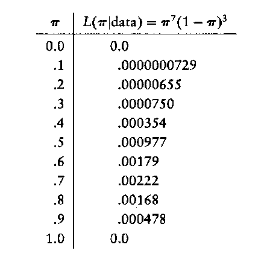
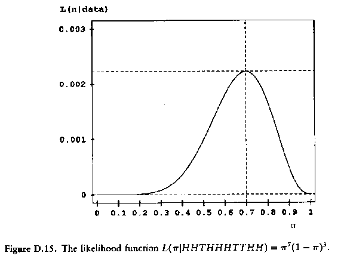
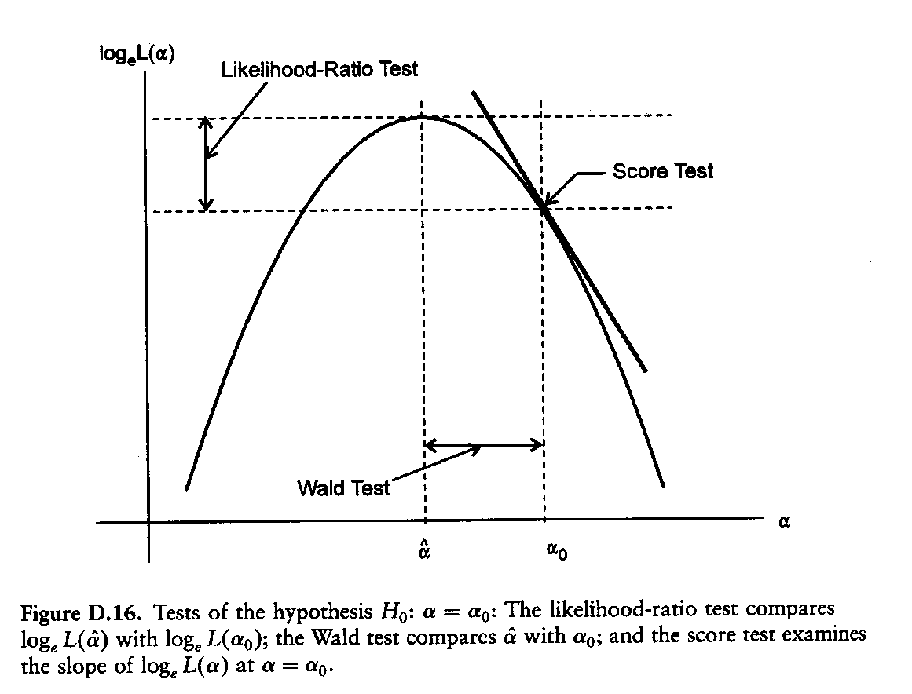
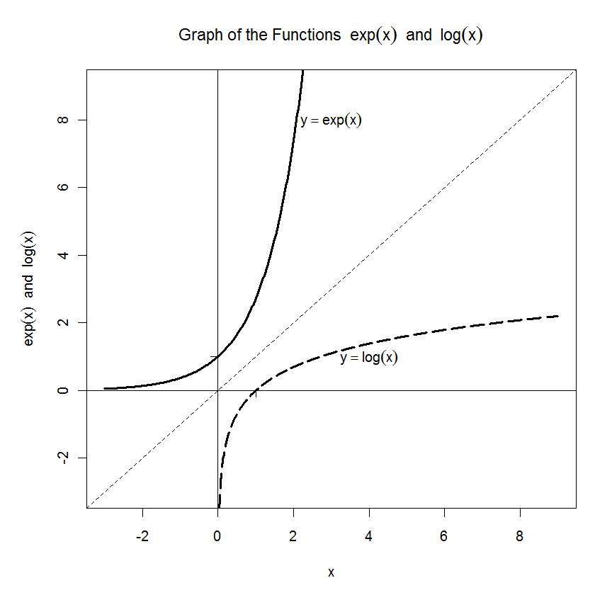

Week08: Maximum Likelihood Principle (Abridged)
1 Estimation Principles
Besides ordinary least squares estimation principle, there are several alternative estimation principles such as the method of moments, maximum likelihood or Bayesian used in statistics. Each of these estimation methods employs some form of optimization techniques to estimate the unknown parameters from observed (or hypothetical) sample data.
Historically, the maximum likelihood and OLS estimators were (and still are) the most prominent estimation methods.
However, other principles are gaining momentum under specific conditions.
The maximum likelihood estimator explicitly requires:
that the functional form of the underlying distribution of each random variable is explicitly known and that the given sample data conform with this distribution (the parameters of the underlying distribution do not need to be fully specified),
that the observations are statistically independent and identically distributed (or can be transformed to satisfy the i.i.d. requirement).
Recall: OLS is more relaxed: it satisfies the Gauss-Markov theorem (unbiasedness and efficiency estimator even if some assumptions are not perfectly satisfied) without relying on strict distributional assumptions.

2 The Maximum Likelihood Principle
(see FOX Appendix)
- The two assumptions of [a] known distribution function and [b] stochastic independence allow constructing the joint density function for the sample observations in terms of the unknown parameters \(\theta\) as a product of their individual distributions:
\[f(x_1, \ldots, x_n | \theta) = f(x_1 | \theta) \cdot \ldots \cdot f(x_n | \theta)\]
Maximum likelihood asks the question:
Given the observed data \(\{x_1, \ldots, x_n\}\), which is the most likely population parameter \(\theta\) that has generated the observations?
This becomes an optimization task of finding the unknown parameter \(\theta\) which maximizes the likelihood function of the observed data:
\[\max_{\theta} L(\theta | x_1, \ldots, x_n)\]
This optimization is often carried out by transforming the likelihood function \(L(\theta)\) into its logarithmic form:
- The reason for this transformation is that the product of the probabilities under the independence assumptions becomes now a summation:
\[L(\theta | x_1, \ldots, x_n) = f(\theta | x_1) \cdot \ldots \cdot f(\theta | x_n)\]
\[\Rightarrow l(\theta | x_1, \ldots, x_n) = \log f(\theta | x_1) + \ldots + \log f(\theta | x_n)\]

Derivatives of summations are easier to evaluate because one can skip the product rule.
The estimated parameters \(\theta\) after log-transformation do not change.
Taking the first derivative of the log-likelihood function \(l(\theta | x_1, \ldots, x_n)\), setting it equal to zero \(\frac{\partial l(\theta)}{\partial \theta} = 0\) allows to solve for the unknown parameter \(\theta\) which leads to the best estimate of \(\hat{\theta}\) given the observed data.

Properties of the maximum likelihood estimator:
ML estimators are asymptotically unbiased
ML estimators are asymptotically normally distributed
The ML estimator is asymptotically consistent (unbiased with smaller or equal variance than any alternative estimator for large sample sizes).
Comparable test statistics to the t-test, F-test and partial F-test are available for maximum likelihood estimates.

2.1 Example of the maximum likelihood principal
Flipping a coin n=10 times with the given outcome HHTHHHTTHH. Each throw is conducted independently of the other throws.
Our intuitive guess would be \(\Pr(H) = \frac{\text{# of heads}}{\text{# of trails}} = 0.7\)
The probability of obtaining this sequence of observations, prior to collecting the data, is a function of the unknown population parameter \(\pi\):
\[\Pr(\text{data} | \text{parameter}) = \Pr(HHTHHHTTHH | \pi)\]
\[= \pi \cdot \pi \cdot (1-\pi) \cdot \pi \cdot \pi \cdot \pi \cdot (1-\pi) \cdot (1-\pi) \cdot \pi \cdot \pi\]
\[= \pi^7 \cdot (1-\pi)^3\]

That is, each throw is binary distributed and its outcome is independent of the other throws. Therefore, the product of individual probabilities gives the join-probability.
- Assuming the data are given and the unknown random parameter is \(\pi\) then the conditional probability \(\Pr(\text{data} | \pi)\) changes into a likelihood function:
\[L(\text{unknown parameter} | \text{observed data}) = L(\pi | HHTHHHTTHH) = \pi^7 \cdot (1-\pi)^{10-7}\]
Note: A likelihood function is not a proper statistical distribution function for the unknown parameter \(\pi\) because it does not integrate to one over the range \(\pi \in [0,1]\).
> L <- function(p) p^7*(1-p)^(10-7)
> integrate(L,0,1)
0.0007575758 with absolute error < 8.4e-18
- In our imagination we can vary the parameter \(\pi\) within its feasible range \(\pi \in [0,1]\) and find the maximum value of the likelihood function for the given sample observations at a particular value \(\hat{\pi}\). See the R script
likeBinom.R.

The likelihood that our given data comes from a population with \(\pi = \hat{\pi}\) is highest at \(\hat{\pi}\). This is our best guess for the unknown underlying population parameter \(\pi\).
See table in Fox’s Appendix and Figure D.15

Discussion: If the true probabilities were \(\pi = 0.0\) or \(\pi = 1.0\) (the sure events) then the observed sample would have been impossible to observe.
The maximum likelihood estimation method also allows to evaluate the covariance matrix among the estimated parameters \(\theta\) (see Fox’s appendix pages 92-100)
2.2 The Best Estimate for \(\pi\) (skipped)
\(L(\pi | \text{data}) = \pi^x \cdot (1-\pi)^{n-x}\)
\(\Rightarrow \log L(\pi | \text{data}) = l(\pi) = x \cdot \ln \pi + (n-x) \cdot \ln(1-\pi)\)
The following rules are applied to find the derivative of \(l(\pi)\):
[a] \(\frac{\partial \ln(\pi)}{\partial \pi} = \frac{1}{\pi}\) and
[b] the chain rule of derivatives \(\frac{\partial \ln(1-\pi)}{\partial \pi} = \frac{1}{1-\pi} \cdot (-1)\)
with \(\frac{\partial \ln(1-\pi)}{\partial (1-\pi)} = \frac{1}{1-\pi}\) and \(\frac{\partial (1-\pi)}{\partial \pi} = -1\).
Thus the first derivative of the log-likelihood with respect to \(\pi\) becomes
\[\frac{\partial l(\pi)}{\partial \pi} = \frac{x}{\pi} + (n-x) \cdot \frac{1}{1-\pi} \cdot (-1)\]
A maximum is obtained by setting the first derivative equal to zero and solving for the unknown parameter:
\[\frac{x}{\pi} - \frac{n-x}{1-\pi} \equiv 0 \quad \Rightarrow \quad \frac{x}{\pi} = \frac{n-x}{1-\pi} \quad \Rightarrow \quad \frac{1-\pi}{\pi} = \frac{n-x}{x} \quad \Rightarrow \quad \frac{1}{\pi} - 1 = \frac{n}{x} - 1\]
which leads to \(\hat{\pi} = \frac{x}{n}\).
- The maximum likelihood \(L\) is given at \(L(\hat{\pi} | \text{data}) = \left(\frac{x}{n}\right)^x \cdot \left(1 - \frac{x}{n}\right)^{n-x}\)
2.3 Estimation of the parameter’s variance \(\text{Var}(\hat{\pi})\) (skipped)
To obtain \(\text{Var}(\theta) = I^{-1}(\theta) = \left[-E\left(\frac{\partial^2 l(\theta)}{\partial \theta \cdot \partial \theta^T}\right)\right]^{-1}\) note that for the binomial distribution the expected value of the sum of the successes is equal to n-times the population probability of a single event, \(E[x] = n \cdot \pi\)
\(\frac{\partial^2 l(\pi)}{\partial^2 \pi} = \frac{\partial \left(\frac{\partial l(\pi)}{\partial \pi}\right)}{\partial \pi} = \frac{\partial \left[\frac{x}{\pi} - \frac{n-x}{1-\pi}\right]}{\partial \pi} = -\frac{x}{\pi^2} - \frac{n-x}{(1-\pi)^2}\)
Thus we get for the expectation (information matrix)
\[E\left[-\frac{x}{\pi^2} - \frac{n-x}{(1-\pi)^2}\right] = -\frac{n\pi}{\pi^2} - \frac{n - n\pi}{(1-\pi)^2} = -\frac{n}{\pi} - \frac{n}{1-\pi}\]
\[= -n \cdot \left(\frac{(1-\pi) + \pi}{\pi \cdot (1-\pi)}\right) = -\frac{n}{\pi \cdot (1-\pi)}\]
Substituting \(\hat{\pi}\), multiplying the expression by \(-1\) and taking the inverse gives the estimated variance:
\[\text{Var}(\pi) = \frac{\hat{\pi} \cdot (1-\hat{\pi})}{n}\]
3 Likelihood Ratio Test, Wald Test, and Score Test
3.1 Likelihood Ratio Test (LR)
The likelihood ratio test requires that the model is estimated (calibrated) twice:
- first under the null hypothesis and
- then under the alternative hypothesis.
Under the null hypothesis means that the parameters, which are tested, are set a priori to a given value, which in most cases is zero (that is, not included in the estimation procedure).
The test statistic becomes \(\chi_H^2 = -2(\ln(L_{K-H}) - \ln(L_K)) = -2 \cdot \ln\left(\frac{L_{K-H}}{L_K}\right)\) where
- \(\ln(L_K)\) is the log-likelihood of the unrestricted model with K freely varying parameters
- and \(\ln(L_{K-H})\) is the log-likelihood of the model \(H\) restricted parameters.
The number of restrictions (parameters not estimated) is H.
The relationship \(\ln(L_{K-H}) \leq \ln(L_K)\) holds because the restricted likelihood function is associated with a model that fit the data not as well as the full model.
The \(\chi_H^2\) test statistic is asymptotically \(\chi^2\)-distributed with H degrees for freedom under the null hypothesis that the H restricted parameters are irrelevant.
Large values of \(\chi_H^2\) indicate that the a priori restricted parameters are relevant and should vary freely (that is different from their assumed values under the null hypothesis). Therefore, they should also be estimated.
The underlying idea of the likelihood ratio test is similar to that of the partial F-test.
3.2 The Wald test
Under the Wald test the full model with all parameters is estimated and the included parameters are tested against their values under the null hypothesis.
It requires that we evaluate the parameter’s standard errors (derived from the inverse information matrix) at the unrestricted maximum likelihood value.
The Wald test is a substitute for the single t-test for the parameters in the model. It helps to decide which parameters to drop from the model.
3.3 The Score test (a.k.a. Lagrange multiplier test)
The Score test estimates the restricted model where the parameters under scrutiny are set a priori to a given value (in most cases zero).
The score test helps to decide which parameters should be estimated freely and added to a restricted model.
3.4 General Discussion
Critical values of the \(\chi^2\) distribution are used with the degrees of freedom equal to
- the number of restricted parameters for the likelihood ratio test, and
- one for the Wald-test and Score-test if just individual parameters are tested.
These tests are only valid asymptotically for large samples of statistically independent observations.
It can be shown that \(S \leq LR \leq W\) when they are applied under identical circumstances.
Thus, the larger Wald test will reject the null hypothesis more frequently than the other tests.
Visualization of the three test principles.

4 Goodness of Fit Statistics Associated with Likelihoods
4.1 Deviance
The key building block of the deviance is a likelihood ratio comparison of the log-likelihood of current model against the log-likelihood of the best model which fits the observed data perfectly.
A perfectly fitting model is also called a saturated model because it uses as many estimated parameters (one for each observation) as there are observations.
A simple approach to obtain a saturated model is to substitute the observed dependent variable as predicted variable into the likelihood function, i.e., \(\hat{y}_i \leftarrow y_i\).
For example: In case of a binary distributed dependent variable \(y_i \in \{0,1\}\) with \(\hat{\pi}_i = y_i\) the likelihood function becomes
\[L(\text{saturated model}) = \prod_{i=1}^{n} y_i^{y_i} \cdot (1-y_i)^{(1-y_i)} = 1\]
- The deviance comparing the fitted model against a saturated model is simply a likelihood ratio statistic:
\[D(\text{fitted model}) = -2 \cdot \log\left(\frac{L(\text{fitted model})}{L(\text{saturated model})}\right) = -2 \cdot \log(L(\text{fitted model}))\]
Therefore, models with a small deviance fits the observed data well, whereas a model with a large deviance fits the data poorly.
Analog to linear regression one can think of the deviance as the residual-sum-of-squares.
4.2 Akaike Information Criterion
- The Akaike Information Criterion (AIC) is a measure of model fit. It is defined as a deviance of a model which is penalized by its number of estimated parameters:
\[AIC = \underbrace{-2 \cdot \log(L(\text{model with } k \text{ parameters}))}_{= D(\text{model with } k \text{ parameters})} + 2 \cdot (k+1)\]
- In general models with a smaller AIC are preferred.


5 Appendix: Basic Math
5.1 Discussion the Logarithm and the Exponential Function (Skipped)
- See the figure below for the exponential function and the logarithmic function

Exponential function: \(\exp(x)\) or \(e^x\) with \(e \approx 2.7183\).
Note: \(x \in [-\infty, \infty]\) but \(\exp(x) > 0\).
Natural logarithm: \(\ln(x)\), or \(\log_e(x)\).
It is the inverse of the exponential function.
Note: \(x > 0\) but \(\ln(x) \in [-\infty, \infty]\)
- Meaning of inverse: \(x = \ln[\exp(x)]\) for \(x \in [-\infty, \infty]\) and \(x = \exp[\ln(x)]\) for \(x > 0\). These rules are often applied to linearize multiplicative functions.

- Basic rules of exponential function:
\[\exp(-a) = \frac{1}{\exp(a)}\]
\[\exp(a+b) = \exp(a) \cdot \exp(b) \quad \text{and} \quad \exp(a-b) = \frac{\exp(a)}{\exp(b)}\]
\[\exp(b \cdot a) = [\exp(a)]^b \quad \text{or} \quad \exp(b \cdot a) = [\exp(b)]^a\]
- Basic rules of logarithmic function:
\[\ln\left(\frac{1}{a}\right) = \ln(a^{-1}) = -\ln(a)\]
\[\ln(a \cdot b) = \ln(a) + \ln(b) \quad \text{and} \quad \ln\left(\frac{a}{b}\right) = \ln(a) - \ln(b)\]
\[\ln(a^b) = b \cdot \ln(a) \quad \text{and} \quad \ln(a^{-b}) = \ln\left(\frac{1}{a^b}\right) = -b \cdot \ln(a)\]
5.2 Discussion of Derivatives (skipped)
- Derivatives of exp() and ln() (see slopes in graphs on page 1):
\[\frac{\partial \exp(x)}{\partial x} = \exp(x) \quad \text{and} \quad \frac{\partial \ln(x)}{\partial x} = \frac{1}{x}\]

- General rule for derivatives of polynomial functions:
\[f(x) = a \cdot x^b \quad \Rightarrow \quad \frac{\partial f(x)}{\partial x} = a \cdot b \cdot x^{b-1} \quad \text{Note: } x^0 = 1\]
- Summation rule:
\[f(x) = g(x) + h(x) \quad \Rightarrow \quad \frac{\partial f(x)}{\partial x} = \frac{\partial g(x)}{\partial x} + \frac{\partial h(x)}{\partial x}\]
- Product rule:
\[f(x) = g(x) \cdot h(x) \quad \Rightarrow \quad \frac{\partial f(x)}{\partial x} = \frac{\partial g(x)}{\partial x} \cdot h(x) + g(x) \cdot \frac{\partial h(x)}{\partial x}\]
Example:
\[f(x) = x^2 \cdot \ln(x) \quad \text{with } g(x) = x^2 \text{ with } h(x) = \ln(x)\]
\[\frac{\partial f(x)}{\partial x} = 2x \cdot \ln(x) + x^2 \cdot \frac{1}{x} = x \cdot (2 \ln(x) + 1)\]

- Chain rule of nested functions:
\[f(x) = g(h(x)) \quad \Rightarrow \quad \frac{\partial f(x)}{\partial x} = \frac{\partial g(h(x))}{\partial h(x)} \cdot \frac{\partial h(x)}{\partial x}\]
Example:
\[f(x) = \ln(3 + 2 \cdot x^2) \quad \text{with } g(h) = \ln(h) \text{ and } h(x) = 3 + 2 \cdot x^2\]
\[\frac{\partial f(x)}{\partial x} = \frac{1}{3 + 2 \cdot x^2} \cdot 4 \cdot x\]
- Higher order derivatives:
\[\frac{\partial^2 f(x)}{\partial^2 x} = \frac{\partial \left(\frac{\partial f(x)}{\partial x}\right)}{\partial x}\]
Local minimum and maximum:
If \(\partial f(x) / \partial x = 0\) then \(f(x)\) has either a local minimum \(x_{min}\) or a local maximum \(x_{max}\).
Conditions for local minimum or maximum:
If \(\partial^2 f(x) / \partial^2 x < 0\) and \(\partial f(x) / \partial x = 0\) then \(f(x)\) has a local maximum \(x_{max}\).
If \(\partial^2 f(x) / \partial^2 x > 0\) and \(\partial f(x) / \partial x = 0\) then \(f(x)\) has a local minimum \(x_{min}\).

- Example: Polynomial function of third degree (see the R script
DerivativesCubicFct.R):
\[f(x) = 1 \cdot x^3 - 10 \cdot x^2 + 6 \cdot x + 20 \quad \text{(bold line for cubic function)}\]
\[\Rightarrow \frac{\partial f(x)}{\partial x} = 3 \cdot x^2 - 20 \cdot x + 6 \quad \text{(long-dashed line for quadratic function)}\]
\[\Rightarrow \frac{\partial^2 f(x)}{\partial^2 x} = 6 \cdot x - 20 \quad \text{(short-dashed line for linear function)}\]
 potentially has two zero values at \(x_1 = \frac{-b - \sqrt{b^2 - 4 \cdot a \cdot c}}{2 \cdot a}\) and at \(x_2 = \frac{-b + \sqrt{b^2 - 4 \cdot a \cdot c}}{2 \cdot a}\).
Caution: If the discriminant \((b^2 - 4 \cdot a \cdot c)\) under the square root is negative then the solution will consist of complex conjugates (pairs of imaginary numbers).
The first derivative is a quadratic function. Therefore, \(3 \cdot x^2 - 20 \cdot x + 6 = 0\) has local maximum or minimum either at
\[x_1 = \frac{20 - \sqrt{(-20)^2 - 4 \cdot (3 \cdot 6)}}{3 \cdot 2} = \frac{10}{3} - \frac{\sqrt{82}}{3}\]
\[x_2 = \frac{20 + \sqrt{(-20)^2 - 4 \cdot (3 \cdot 6)}}{3 \cdot 2} = \frac{10}{3} + \frac{\sqrt{82}}{3}\]
The second derivative is \(\frac{\partial^2 f(x)}{\partial^2 x} = 6 \cdot x - 20\).
For \(x_1\) we get \(6 \cdot \left[\frac{10}{3} - \frac{\sqrt{82}}{3}\right] - 20 = -2 \cdot \sqrt{82} < 0\) which therefore is a local maximum
and for \(x_2\) we get \(6 \cdot \left[\frac{10}{3} + \frac{\sqrt{82}}{3}\right] - 20 = 2 \cdot \sqrt{82} > 0\) which is a local minimum.